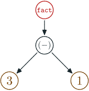
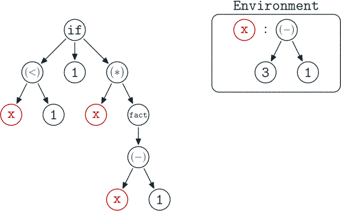
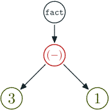

Useful Haskell

tl;dr:
To put Haskell programming to the next level.
Finding the minimal syntax core you need to learn Haskell
- Basic syntax
- Types
Basic Usages (verbose documentation)
- compare haddock doc to markdown
- basic project with cabal (cabal haddock)
Types to the core, the hidden secret
- bad prelude!
I learn Haskell in 5 minutes
Mathematical expression: as usual, just take care of difference between Integers and Float (div and (/) ) are different.
Lists:
[] ⇒ empty list
[1,2,3] ⇔ 1:2:3:[] ⇔ 1:[2,3]
[1..] ⇒ 1:2:3:... infinite list (YES)Function declaration:
fact x = if x<2 then 1 else x * fact (x-1)Which could be invoked like this:
>>> fact 32
263130836933693530167218012160000000There is no “fact(32)” but “fact 32”. This is a very important syntax design.
The computation is all about reduction rules.
fact 3
let x = 3 in if x<2 then 1 else x * fact (x-1)
3 * fact (3-1)
3 * (let x = 3-1 in if x<2 then 1 else x * fact (x-1))
3 * (if 2<1 then 1 else 2 * fact (2-1))
3 * (2*(let x = 2-1 in if x<2 then 1 else x * fact (x-1)))
3 * (2*(if 1<2 then 1 else x*fact(x-1)))
3 * (2*1)
3 * 2
6Many things are to note. First the reduction was non-strict. The evaluation is lazy. For example:
fact (3-1)
-- reduced to
(let x = 3-1 in if x<2 then 1 else x*fact (x-1))
-- did not reduced to
fact 2Explication with the AST (Abstract Syntax Tree)
Lazy evaluation
Start reduction by the higher non evaluated node.reduces to

Strict
Start reduction ky the deepest non fully evaluated node.reduces to
Lazy evaluation make it easier not to reach ⊥ (I mean infinite loop).
Typically head [1..1000000000] returns 1 almost instantaneously in Haskell. While if strictly evaluated would take a lot of memory and time. Also we could do head [1..] and it returns 1.
So in Haskell you define functions and they are reduced to produce computation. There are a lot of syntactical sugar in Haskell to help you write less code. But in the end, it will be translated that way.
That was the functions part. But there is the other at least as important part. The types.
Types
In Haskell, types are extremely important. And also hard to figure out.
>>> :t fact
fact :: (Num a, Ord a) => a -> aThe heck does this mean? Before the =>, it means that the type a belongs to the type classes Num and Ord. The a -> a part means fact is a function from a to a.
Every types in the type class Ord could be used with (<). And Every types in the type class Num could be used with (*) and (-).
The type classes are a kind of interface declaration for types. For example there is an instance of Num for Int, Integer, Float…